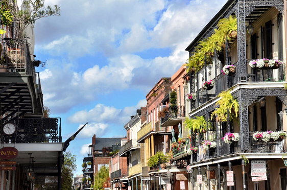
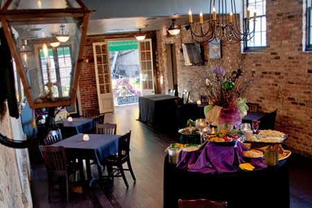
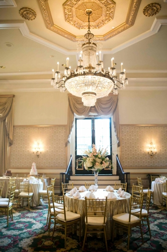
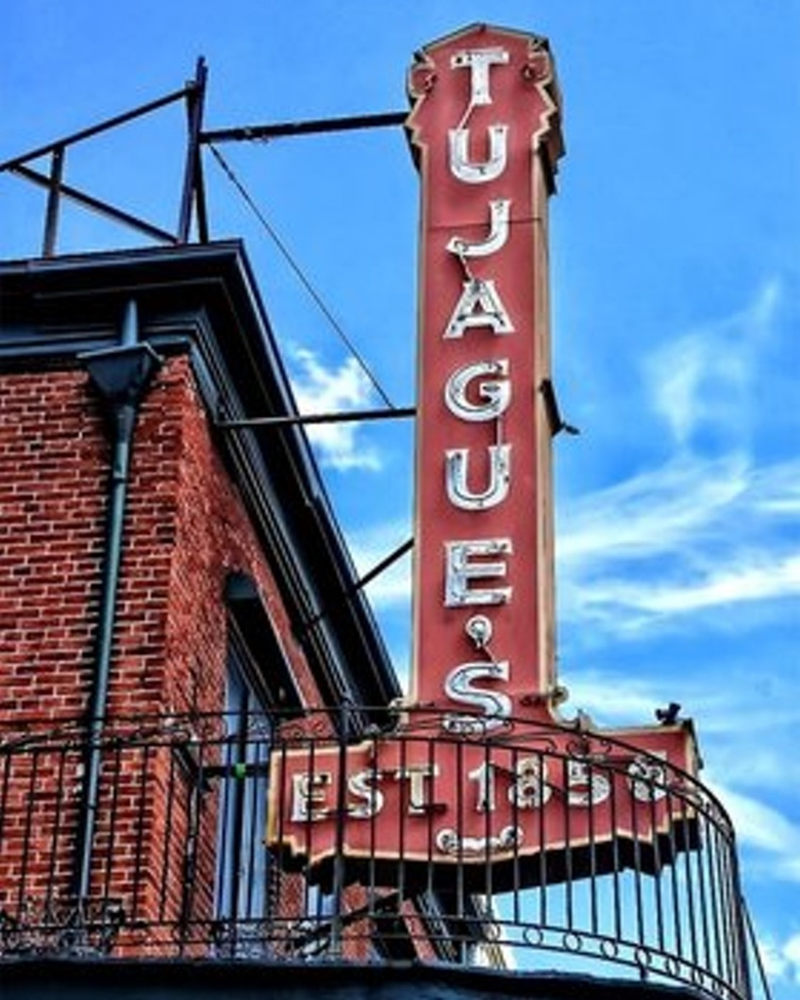

Welcome
We could not be more excited to become Mr. and Mrs. Figueiredo and celebrate with our family and friends! We hope you can join us in NOLA this November.
Events
More details to be added as the date approaches so please check back.
French Quarter Walking Tour
November 4, 2016; Time: 9:30am
We booked a tour for our guests to learn more about the history and charm of the French Quarter. Please email us by October 10 if you plan to join so we can organize guides accordingly.
Welcome Reception on Bourbon Street
November 4, 2016; Time: 8:30pm
We will kick-off the weekend celebration with drinks and dessert at the Bourbon Vieux! All guests are welcome; we look forward to seeing you there.
Wedding Ceremony and Reception
November 5, 2016; Ceremony at 6pm

Ceremony will begin poolside at the Bourbon Orleans Hotel promptly at 6 pm.
Cocktails, Second Line, and Reception will follow.
Black tie optional; comfortable shoes recommended.
Adult Ceremony and Reception
Farewell Brunch
November 6, 2016; Time: 10am - 12pm
There will be a casual, come & go farewell brunch at Tujague's to rehash the weekend festivities and send the newlyweds off!
Travel
Destination - New Orleans!
Louis Armstrong International Airport is ~15 miles from the French Quarter and has set taxi rates and shuttle services available.
There is no shortage of hotels in New Orleans! We have reserved room blocks at the following places (in order of distance from the wedding).
The Bourbon Orleans
Room block link for discounted rate
Hotel Provincial
Room block link for discounted rate
The Wyndham French Quarter
Room block link for discounted rate
The Whitney Hotel
Room block link for discounted rate
NOLA
We love New Orleans, and we hope that you can take some time to enjoy the city. Here are some of our favorite things.
Drinks
- Carousel Bar at Hotel Monteleone – try to get a seat on the moving carousel!
- Sazerac Bar at Roosevelt Hotel – try the original New Orleans sazreac cocktail
- Piano Bar at Pat O'Briens – request your favorite songs (insiders tip: Pat O’Briens has three connected bars in the French Quarter and the “original” bar has the cheapest drinks in the Quarter)
Food
New Orleans has delicious food so plan your meals (and wardrobe) accordingly. May we recommend you try gumbo, jambalaya, turtle soup, muffulattas, po’ boys, beignets, and shrimp and grits on your trip?
- Brunch at Café Amelie – across from the Cornstalk Hotel (ties to Iowa!)
- Beignets and coffee at Café du Monde French Market location – long lines for tables; take-out line may be faster
- Restaurant R'evolution – delicious; more casual in the bar area
- Try a Muffuletta from Central Grocery – a NOLA classic!
- Po Boy at Johnny's Po-Boys – a NOLA classic!
- Commander's Palace is a dining institution (reservation required)
Activities
- Preservation Hall – buy tickets in advance or queue for free authentic jazz
- Bayou swamp tour – kayak the Louisiana bayou and spot Spanish moss, bald eagles and alligators (multiple vendors)
- WW2 Museum – highly recommended
- Stroll Royal Street and Chartres Street; be sure to stop at Royal Antiques and the Rodrigue Studio art gallery, home of famous Blue Dog of New Orleans
- TIP: Embrace the "To Go" cup at bars and restaurants if you want to move to a new location or walk and see more sites
- TIP: Just some responsible adult words of caution so we can sleep at night... please be careful on Bourbon Street at night, watch your belongings, and don't talk to strangers (especially if they ask you were you got your shoes)
Registry
Your presence is your present! But for those that wish to gift, we have registered at Macy's and have a Honey Fund.

Questions?
Questions on the wedding, Comments on the website, or Feedback on the future wedding hashtag can be sent to ingberto.wedding@gmail.com
Speaking of wedding hashtags, those under consideration include:
#IngBerto #IngridGetsRobbed #Marryingrob #ForeverFigs #Zingueiredo #IsAnyoneStillReading?